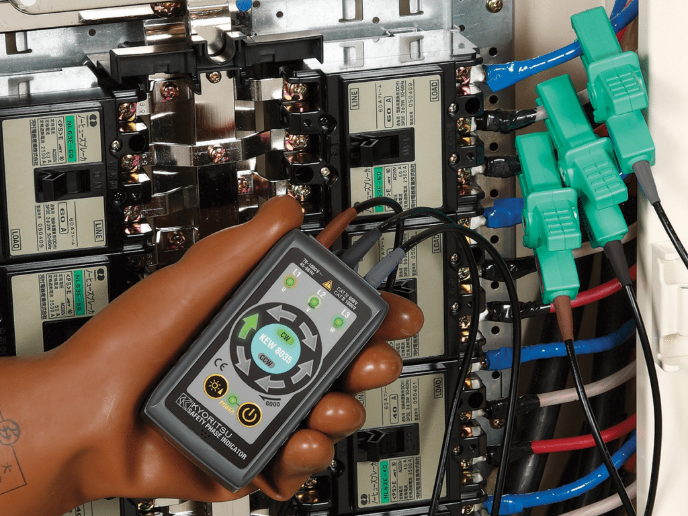

상세정보
스펙(제원표)
구매평
Q&A
제품 소개
KYORITSU KEW 8035는 세계 최초의 비접촉식 상회전 검상기로, 프로브를 활선에 직접 접촉하지 않고도 상회전(위상 순서) 확인이 가능합니다. 절연 악어클립으로 케이블을 물리기만 하면 되기 때문에 분전반을 완전히 해체하지 않고도 신속·안전하게 테스트할 수 있습니다.

절연장갑을 착용한 채로 3상 케이블에 악어클립을 물리는 것만으로 활선 접촉 없이 상회전을 바로 확인할 수 있습니다.
주요 특징
- 절연 악어클립으로 케이블 외경 Ø2.4~30mm까지 비접촉 측정
- 회전식 LED(CW/CCW)와 논리적인 버저음으로 상회전 방향 표시
- 강한 햇빛 아래에서도 잘 보이는 초고휘도(Super Bright) LED 모드
- 구·신 상 표기 방식을 모두 지원해 배선 연결 오류 방지
- 배면 자석으로 금속 배전반에 거치 가능
- 측정범위 3상 70~1000V AC, IEC 61010-1 CAT IV 600V·CAT III 1000V 적합
본 정보 및 이미지는 제조사(KYORITSU) 공식 자료를 바탕으로 재구성하여 제공합니다.